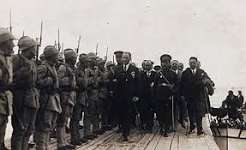

Millî Mücadele ve Liderlik
Samsun’a Çıkış ve Kurtuluş Mücadelesinin Başlaması (1919)
Bu fotoğraf Atatürk’ü neden en iyi anlatıyor?Bu fotoğraf, umudun tükendiği bir dönemde bir milletin kaderini değiştirme cesaretini tek bir karede özetler. Ülkenin işgal altında olduğu en zor şartlarda bile teslimiyeti kabul etmeyip bağımsızlık ateşini yakmak için yola çıkması, onun kararlılığını, vatan sevgisini ve sorumluluk alma gücünü gösterir. Ziyaretçiler bu kareye baktığında yalnızca tarihi bir yolculuğu değil, imkânsız görüneni başarma iradesini görür.